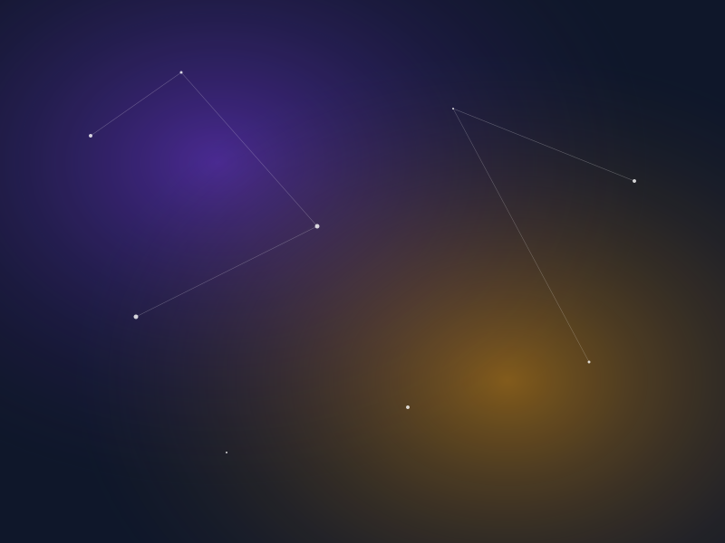

Cosmic Readings & Interpretations
Explore customized calculations of planetary cycles, relationship synastries, and transit alignments formulated by certified astrologers.
Astrological Portfolios
Select a cosmic gateway tailored to your active life coordinates.
Natal Birth Chart
Our core offering. Renders your exact planetary layout, including zodiac degrees, houses, and elements, defining your authentic purpose and life journey patterns.
- • Includes 25-page customized PDF
- • Sun/Moon/Rising detailed analysis
- • Key life-cycle milestones map
Compatibility (Synastry)
Compares the energetic alignment of two distinct charts to analyze attraction, communication triggers, emotional resonance, and shared path challenges.
- • Dual overlapping chart graphic
- • Detailed relationship index scoring
- • Dynamic communication triggers
Forecast & Transits
Maps real-time planetary orbits relative to your natal coordinates. Understand current windows of professional opportunities, Saturn transits, and Mercury retros.
- • 12-month transit timeline calendar
- • Major Saturn/Jupiter shift reports
- • Weekly personal forecast alignments
Career & Vocation
Analyzes your Tenth House (Midheaven), Second House (wealth), and Sixth House (routine) to define professional callings, business opportunities, and timing.
- • Midheaven/MC cusp detailed alignment
- • Wealth houses aspect analysis
- • Career timing transit schedule
Daily Lunar Horoscopes
Provides daily, weekly, and monthly personalized horoscope feeds based on current planetary alignments, lunar configurations, and active transits.
- • Daily mood and energy indicators
- • Full & New Moon personal impacts
- • Direct email updates
Live Consultations
A private 45-minute virtual video call with a certified astrologer to ask direct questions, review reports, and decode complex aspect charts.
- • Direct Q&A with Senior Reader
- • Screen-share interactive chart review
- • Recorded high-definition copy
Precision Mapping Methodology
We combine astronomical coordinates with classical analytical systems.
Astronomical Coordinate Computation
Using specialized NASA JPL ephemerides databases, we compute the coordinates of the Sun, Moon, and 8 planets down to the exact second and coordinate degree.
House Cusp Determination
Applying the Placidus/equal house systems, we establish the Ascendant horizon, mapping houses for career, wealth, communication, and home bases.
Aspect Interpretation Synthesis
Planetary aspects (trines, sextiles, squares) are mapped out, highlighting emotional, romantic, and structural triggers in your chart.
Astrologer Verification & Signoff
A certified reader reviews the generated blueprint and appends manual annotations, ensuring context-rich, non-fatalistic interpretations.
What You Will Receive
Each ordered service compiles into high-end, visual assets accessible in your client portal.
25+ pages of detailed analysis explaining your personal planet locations, aspect pairs, and upcoming transits.
Interactive SVG birth chart rendering, letting you hover over nodes and trace aspect lines dynamically.
Optional 45-minute live screen-share call mapping your transit cycles and addressing personal questions.
Personal client portal listing your files, daily horoscopes, compatibility calculators, and astrologer chat.

Celestial Systems
We support the three primary astrological mapping architectures.
Western Tropical System
Based on the alignment of the Earth relative to the Sun and seasons, beginning at the Vernal Equinox (0° Aries). Focuses heavily on psychological archetypes, developmental growth, and internal motivation.
Vedic Sidereal (Jyotish)
Aligns with the actual astronomical constellations in the sky, incorporating the precession of the equinoxes. Focuses on karma, life path timelines (Dashas), and predictive planetary alignments.
Chinese Imperial Astrology
Based on the lunar-solar agricultural calendar and the 60-year stem-branch cycle. Maps the interaction of the Five Elements (Wood, Fire, Earth, Metal, Water) and Twelve Zodiac Animals to analyze natal energy.
Frequently Asked
Common inquiries about our birth chart mapping calculations.
Ready to Decode Your Map?
Generate your complete birth chart profile or compare relationships with our compatibility reports.